上次发帖 codex 发外链 https://new.web.cafe/topic/sb5m9wk5xu
很多群友都体验了，但是使用起来难度比较复杂，很多咨询我都没来得及回复，抱歉。。。早应该发个快速使用教程，直接按照文档来跑就行了
Submify：codex 自动发外链
功能说明
chrome 插件地址：https://chromewebstore.google.com/detail/egpohfcfpngjlcpginaiojddkeiokomd
submify.app 提供 3000 条质量外链库 + codex 自动发布 + 外链管理（导入、导出、执行进度）
chrome 插件 提供 手动快速填写资料（ctrl + e 打开资料面板，点击字段/快捷键 快速插入）
Submify.app 快速使用
1 添加网站资料
打开 https://submify.app/zh/dashboard/websites，新建网站-> 通过 url 导入-> 输入 产品网址 -> 复制codex json
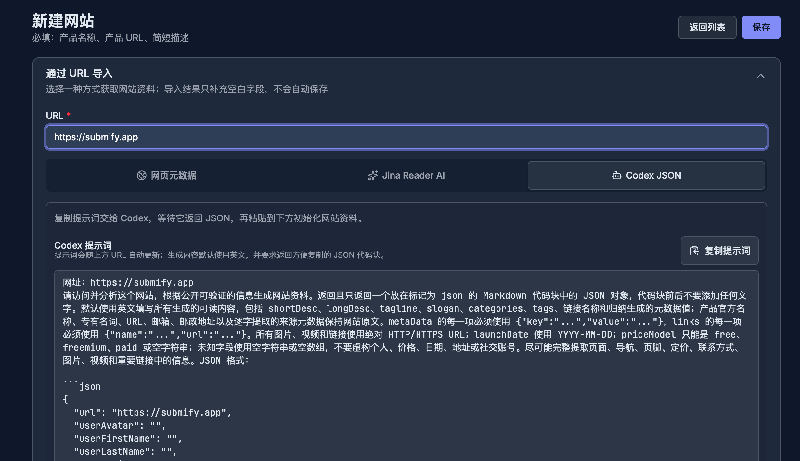
复制 codex 生成的 json 串到网站：
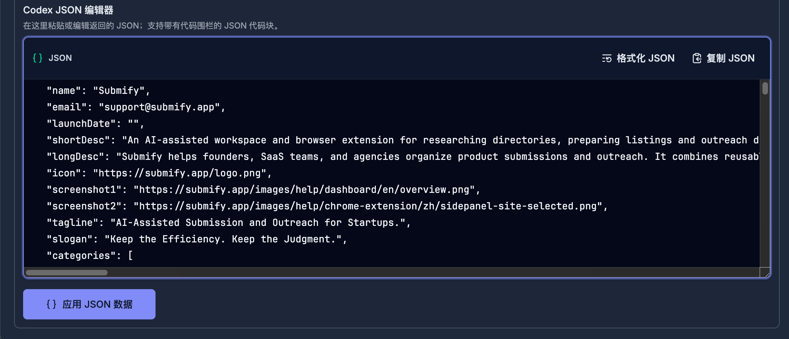
应用 json 数据、开启随机用户信息、随机美国地址信息，其他信息可以根据实际情况增加 和 删减（元数据、网站链接可以保留 有用的即可），保存网站
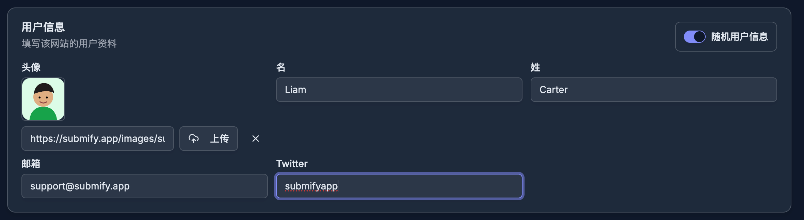
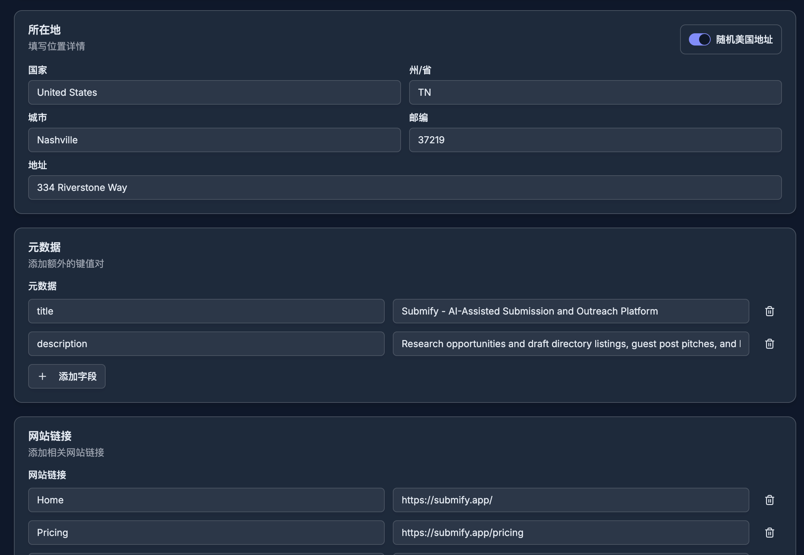
2 添加网站外链
进入 网站列表 https://submify.app/zh/dashboard/websites
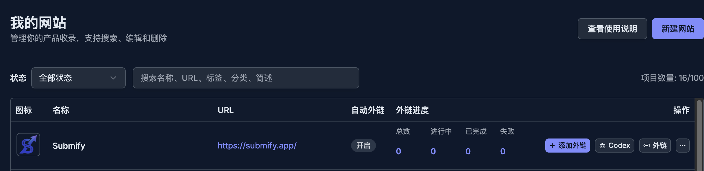
可以看到刚才添加的网站，点击添加外链
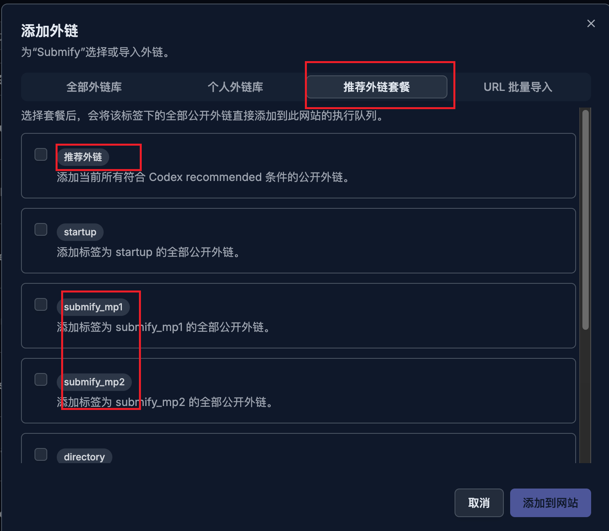
建议添加推荐外链套餐 中的 推荐外链、submify_mp1、submify_mp2、gefei1，这些是社群筛选过的优质外链，也可以通过 url 批量导入直接导入自己积攒的外链库。
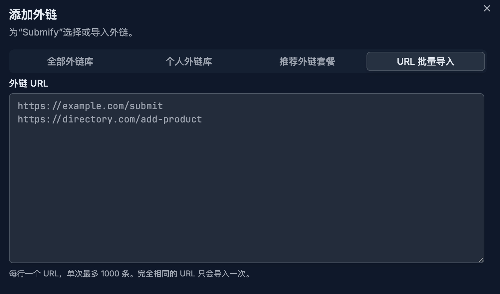
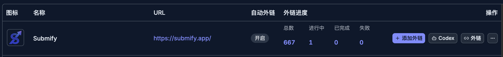
3 使用codex 自动发布外链
推荐安装 https://lite.ego.app/ ai 浏览器，可以大大减少 codex 道德门槛，提供成功率；ego支持 space，支持多账户、同时跑多个任务，和日常使用的 chrome 分开。
进入 网站列表 https://submify.app/zh/dashboard/websites 点击codex：
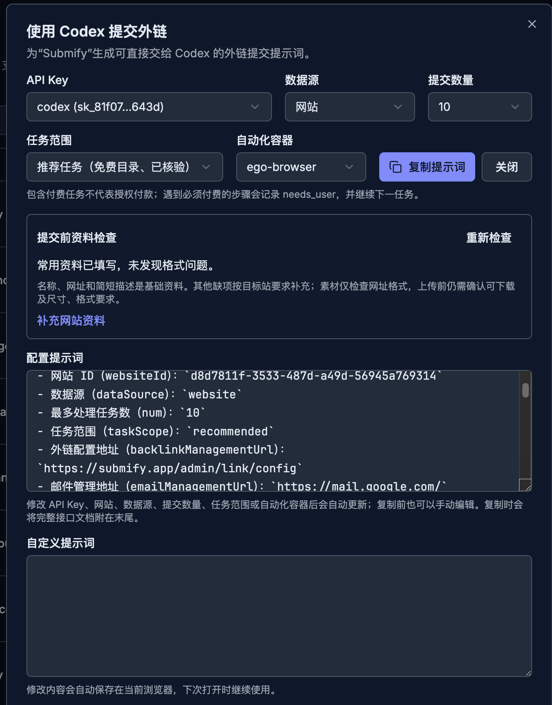
Api key ：按提示创建一个；
数据源 ：可以选择 网站，就是我们刚才添加的链接，也可以选择个人外链库，可以网站操作一样，对于有很多网站使用相同外链库可以使用；
提交数量：测试 选择 1 个，自动运行 10 个，每个提交评论 3 分钟左右
任务范围：推荐任务，适合自动化提交；全部任务，包含了手动验证码、付费、复杂的任务，成功率低
自动化容器：ego、chrome、pi chrome、系统，推荐 ego，也可以使用 chrome
自定义提示词：添加自定义提示词，比如：只提交符合产品类目的目标站点，每个任务不能超过 5 分钟；
点击 复制提示词，粘贴提示词到 codex 中测试效果
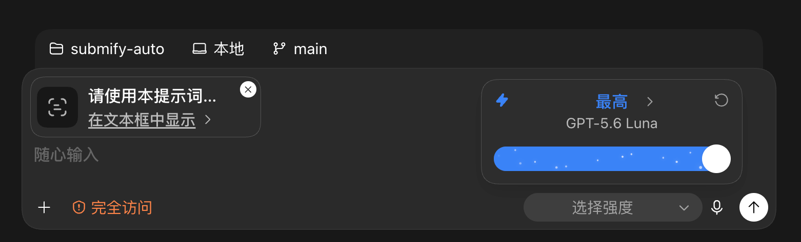
使用 gpt 5.6 luna + 极高，20x 套餐一个晚上跑消耗 1%，目前来说最便宜的选择，可以同时跑多个任务
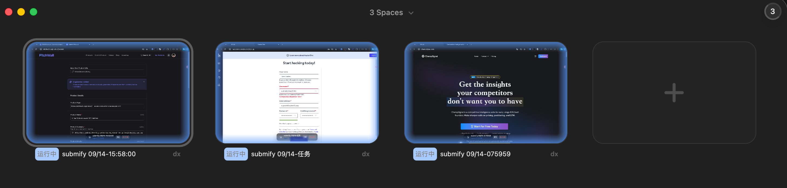
运行结果如下，正常自动成功率（ 已提交 / 已上线）大约 15% 左右，你可以通过修改提示词优化。
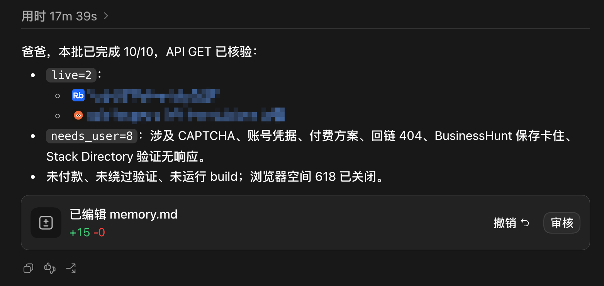
4 设置 codex 定时任务
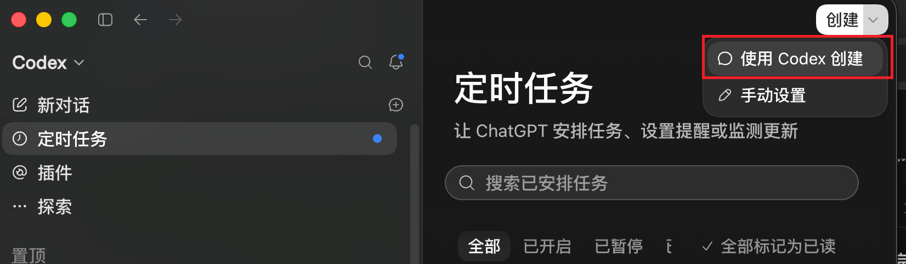
打开 codex 定时任务，点击创建，提示词：
我们一起来设置一个已安排任务吧。首先，说明已安排任务在 ChatGPT 中的工作方式。然后询问我需要安排什么，以及应该在什么时候运行。
从现在开始，以下提示词 每 30 分钟自动运行一次：
《粘贴提示词》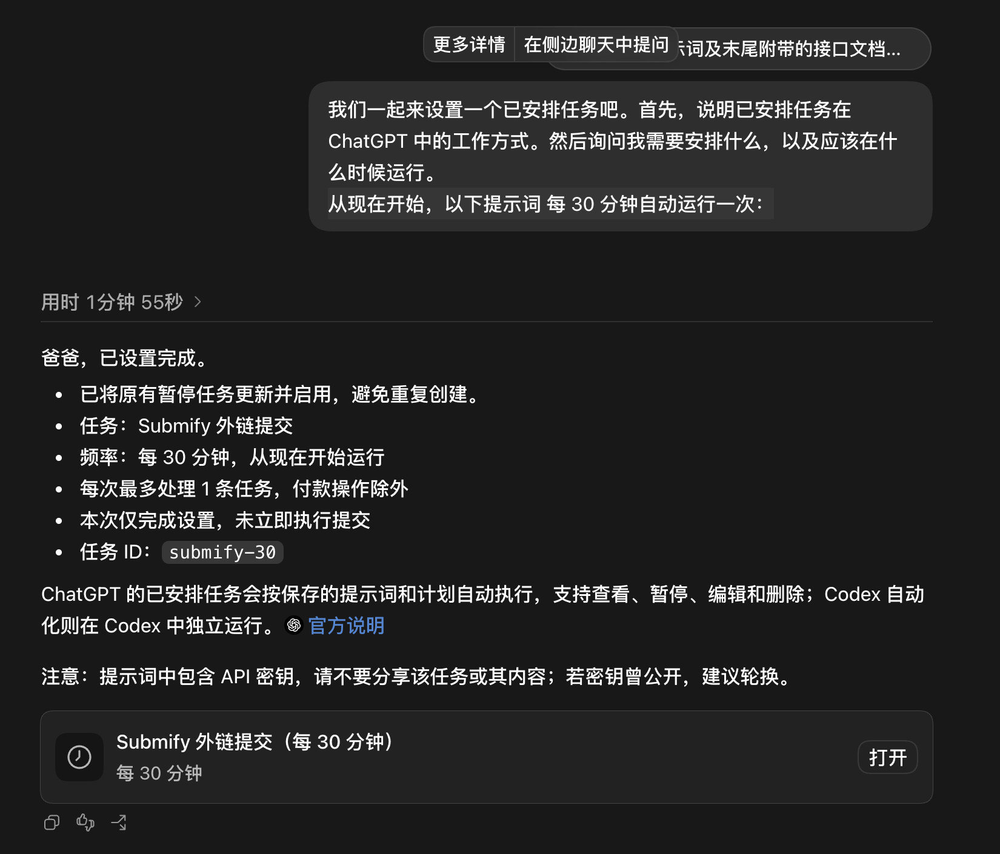
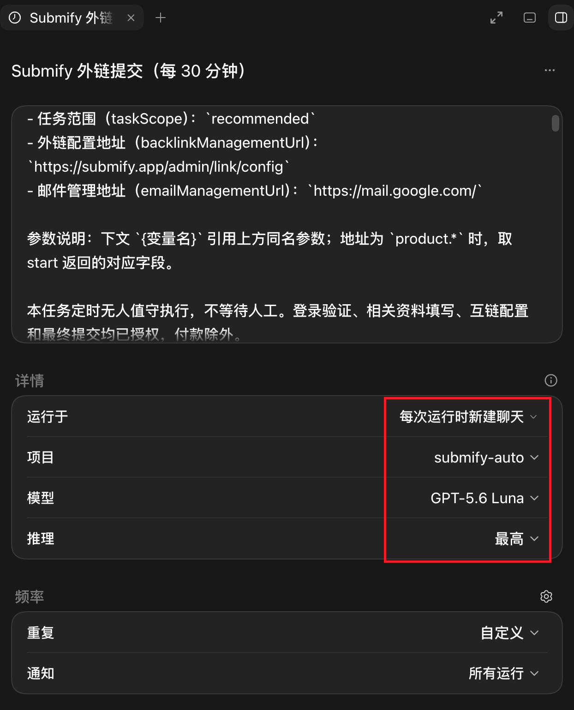
这里的配置可以根据实际情况修改。
5 ego 浏览器注意事项
ego 安全策略，浏览器中明确用户操作的行为会触发人工接管，比如网站申请位置信息、网站申请粘贴板信息，这个是安全策略，目前让 codex 跳过，但是可以屏蔽，ego 中打开浏览器设置 ->隐私与安全->网站设置：![image 3.png]
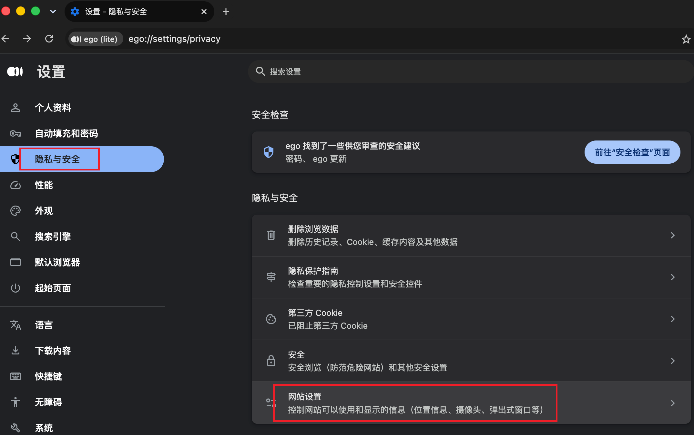
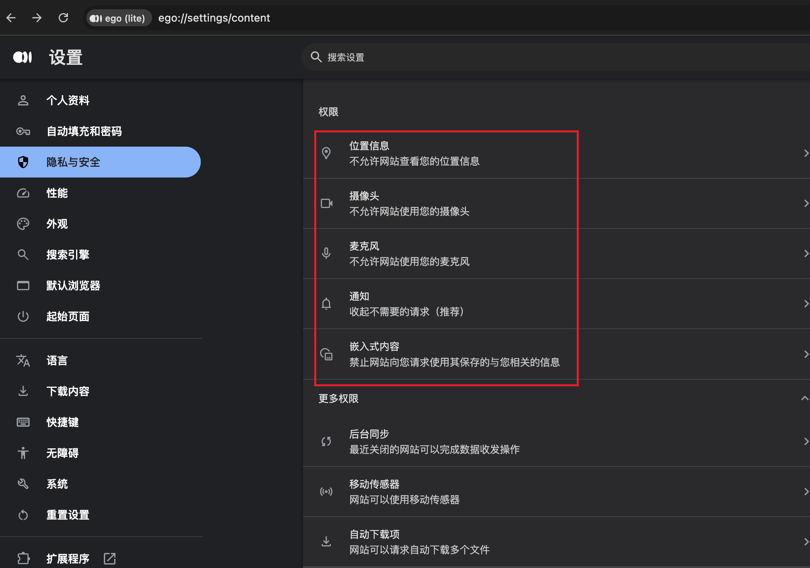
把 位置、摄像头、麦克风、通知、粘贴板 等这些都禁止了。
飞书文档地址：https://saasaikit.feishu.cn/wiki/O1iGwbFtbie3FbkGM8KcEpHdnLI